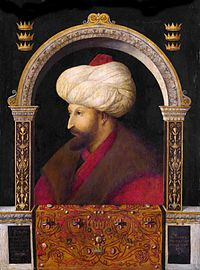

Processó de Sant Marc
Galeria
Formulari
Creador
Inici
Descripció
El tema d'aquesta obra és la processó de Sant Marc, encara que només l'utilitza com una excusa per poder representar l'edifici que es mostra a la part del darrere, entre les característiques d'aquest autor es troba l'interès pel paisatge del fons, en aquesta obra es tracta d'edificis venecians, unint edificis bizantins amb italians. En el quadre volia representar la grandiositat de l'escenari. En aquest quadre es pot apreciar les figures en un primer pla que mostren una gran rigidesa així com la societat de l'època (en el festeig que avança per la plaça com els testimonis que es troben per ella). Es mostra una gran minuciositat en el que descriure les figures arquitectòniques es refereix, però també fins i tot els objectes més petits contenen un gran detallisme i realisme (influència del flamenc) a causa d'això va ser conegut com un precursor del paisatgisme urbà. També es mostra, a través dels diferents plans de color, la profunditat de l'escenari on està passant l'acció. Pel que fa a la perspectiva és menys acurat que en la il·luminació o el color, on destaca el típic vermell venecià, així com tons daurats.
Autor
L'autor és el venecià Gentile Bellini, pertanyent a l'època del Quattrocento Italià en el Renaixement. El seu mestre va ser el seu pare Jacopo Bellini i va estudiar al costat del seu germà Giovanni Bellini i en morir el seu pare, va heretar el taller, va destacar per les seves escenes narratives i pels seus retrats més tard es va convertir en el retratista oficial de la Venècia.
Retrat de Gentile Bellini

Zoom obra